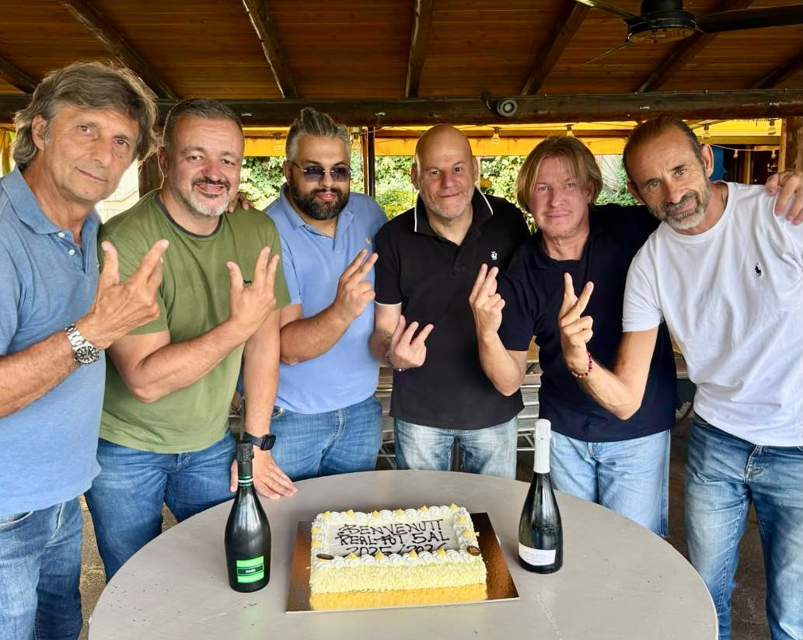
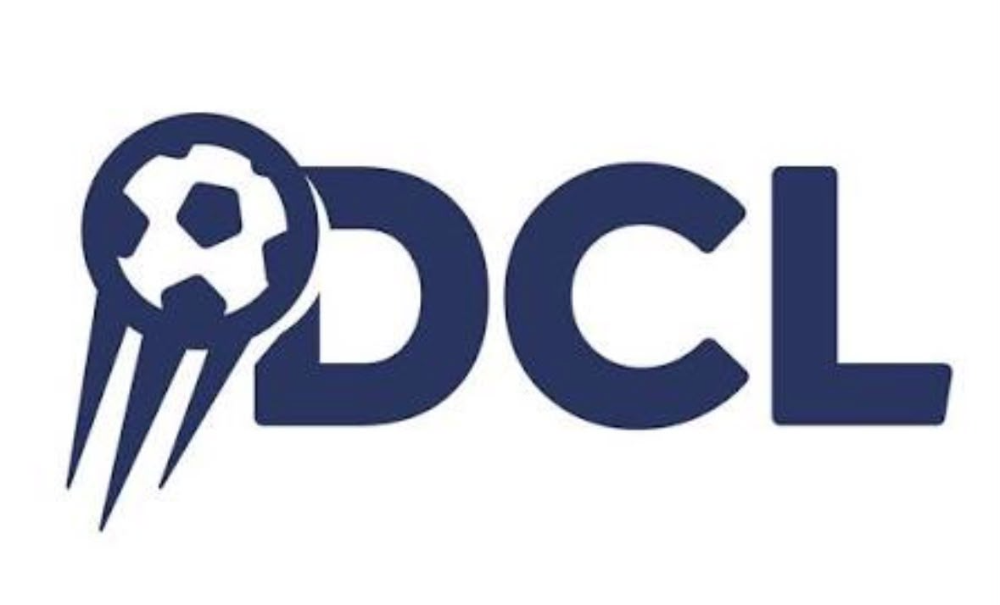

Stagione 2026/2027
Risultati & Classifica
Competizioni, gare e cammino stagionale dei campioni d'Europa del futsal sordi.
 •
•
 •
•
 •
•

Competizioni, gare e cammino stagionale dei campioni d'Europa del futsal sordi.
Dove giochiamo
Il torneo nazionale del futsal sordi. Obiettivo dichiarato: il primo Scudetto della storia del club.
In corso · 2026/2027Trofeo nazionale già in bacheca: campioni in due stagioni consecutive.
Campioni · 2×La Champions del futsal silenzioso. Real Fut5al è campione in carica.
Campioni · 2025/2026I verdetti del campo
17 gennaio 2026, Montesilvano: finale DCL vinta 7–5 contro CDS Huelva.
Campioni · 2025/202619 aprile 2026, Aversa: 4–4 con GSS Torino, vittoria 5–4 ai rigori.
Campioni · 2×9 maggio 2026, Leinì: finale persa 0–8 contro GSS Torino. Secondo posto FSSI.
Argento · 2025/2026Il campionato FSSI 2026/2027 è al via: risultati e punteggi ufficiali di giornata saranno pubblicati qui durante la stagione.

Obiettivo 2026/2027
Campioni d'Europa in carica, la Real Fut5al punta al titolo nazionale che ancora manca. Preparazione, intensità e la fame di chi vuole continuare a scrivere la storia.

Campionato FSSI 2026/2027
La classifica del campionato FSSI 2026/2027 sarà pubblicata qui con l'avvio ufficiale del torneo. Avversarie, giornate e punti saranno aggiornati durante la stagione.
Non perderti nulla
Risultati, classifica e appuntamenti aggiornati durante tutta la stagione.
Vai alle news